01
04
Не просто рисуем,
а собираем систему,
которая работает
на бизнес.
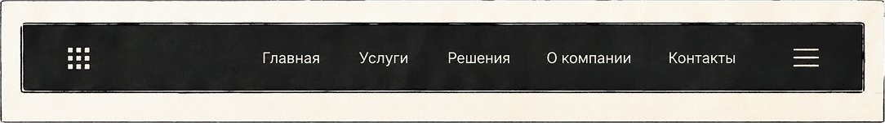
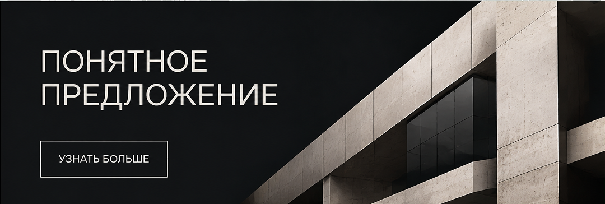
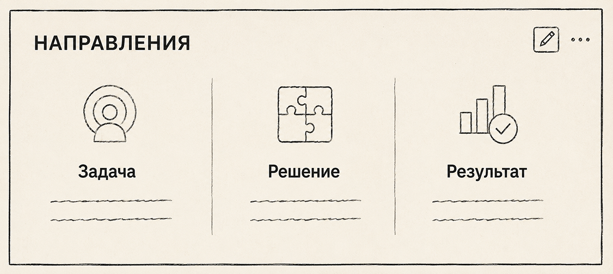
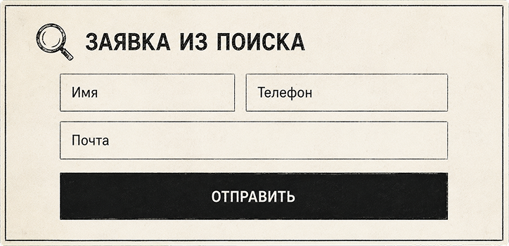
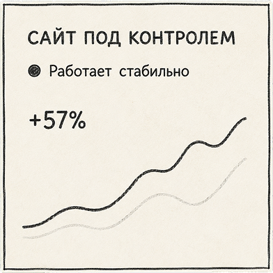
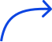
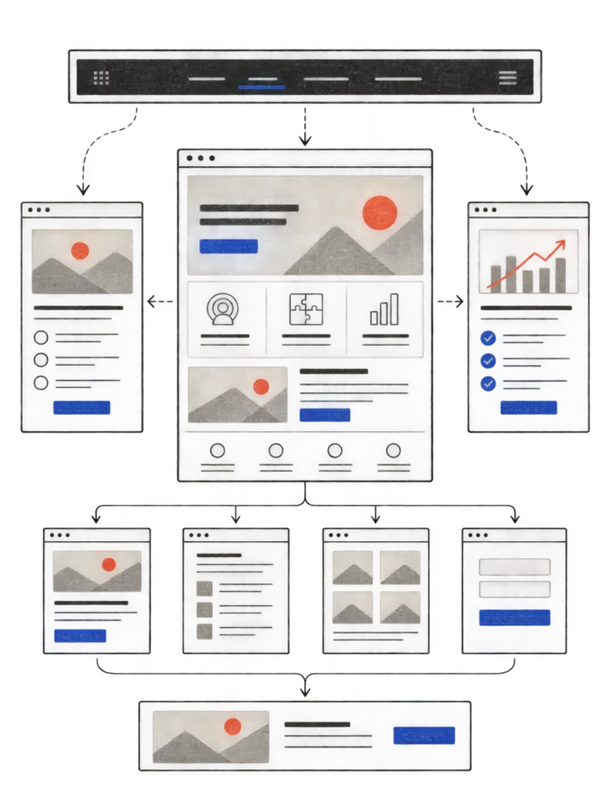
Логика и пользовательский путь
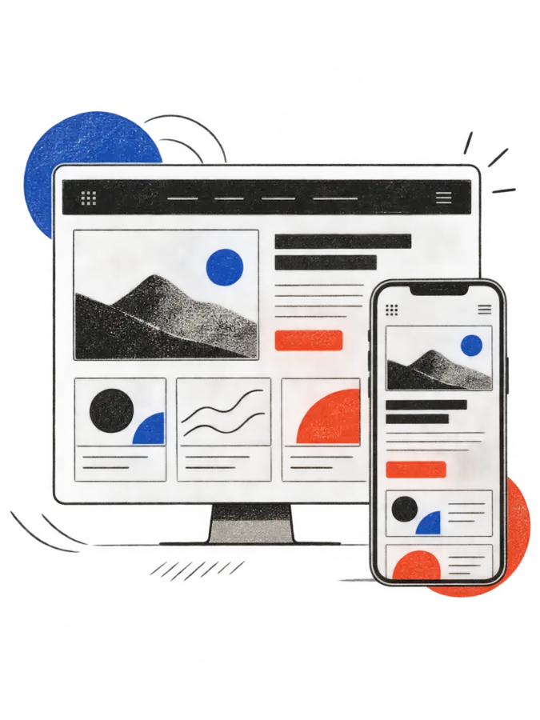
Характер бренда в каждой детали
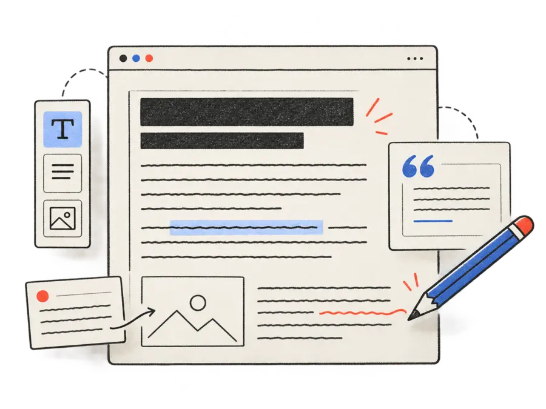
Сильные смыслы, которые продают
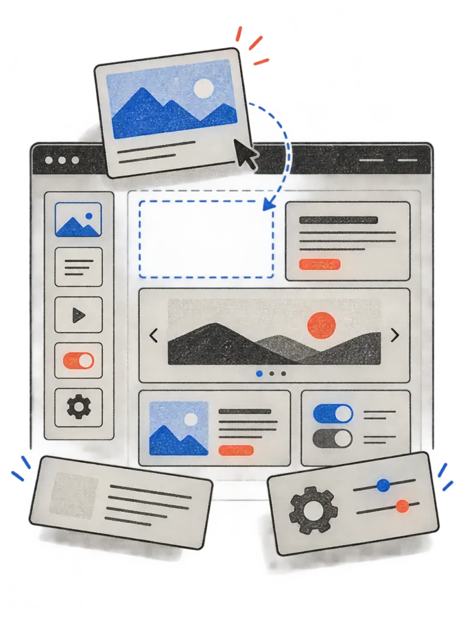
Гибкая разработка и удобное управление
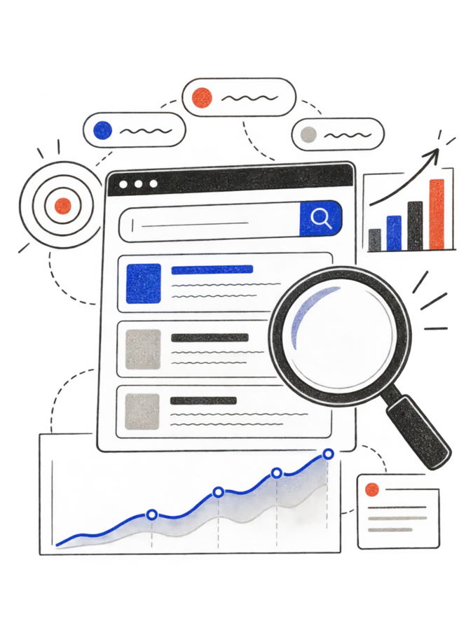
Рост видимости и заявок из поиска
Техническая помощь и развитие сайта
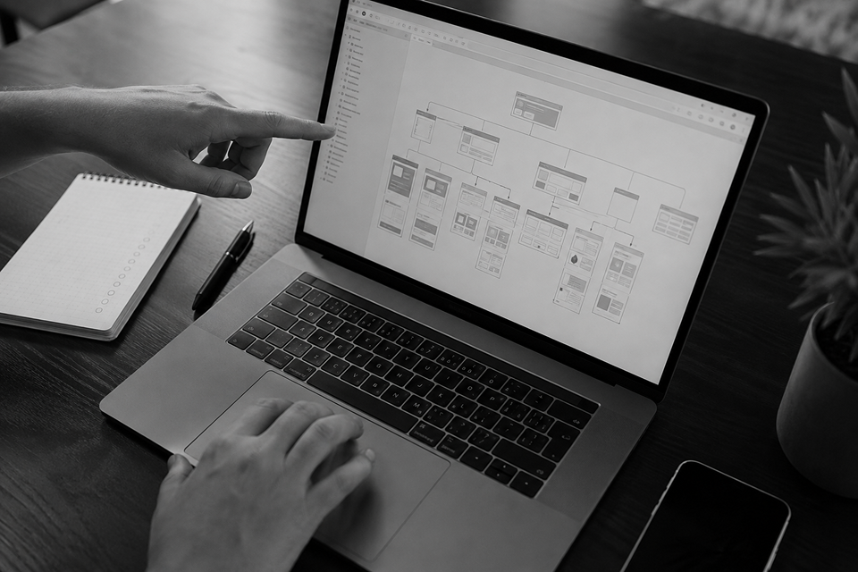
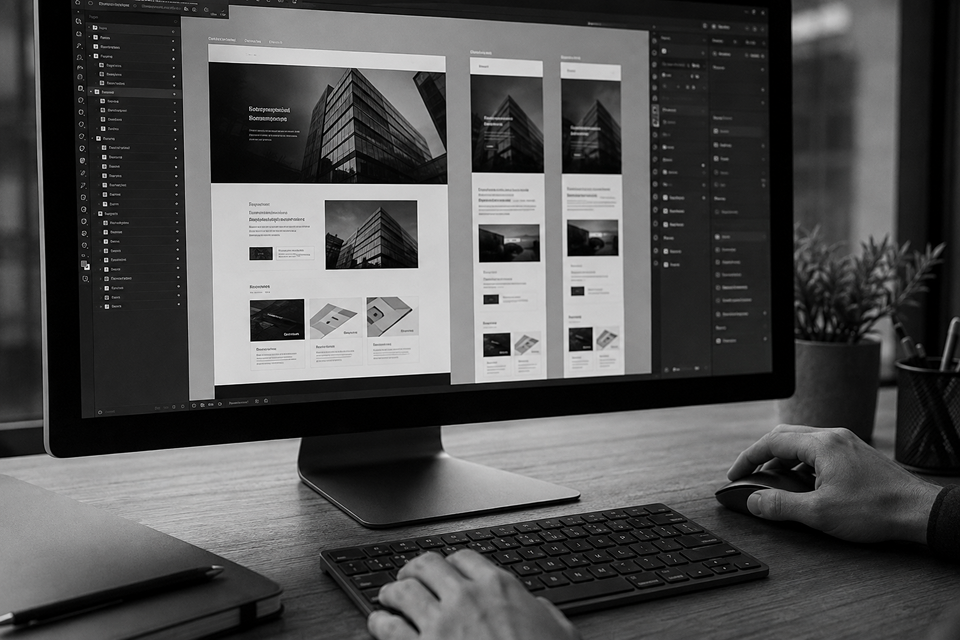
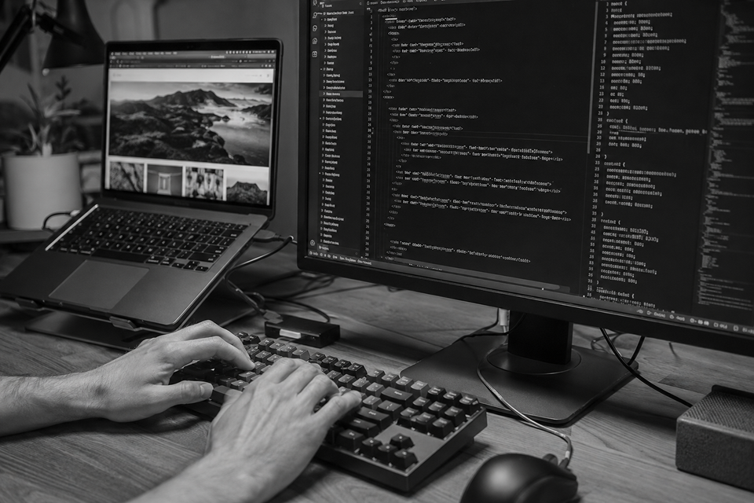
Слушаем, задаем вопросы, фиксируем суть.
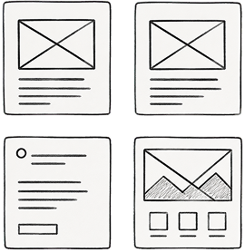
Продумываем логику и пользовательский путь.
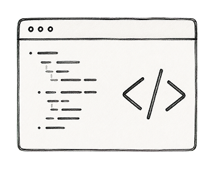
Делаем дизайн, верстаем, настраиваем и тестируем.
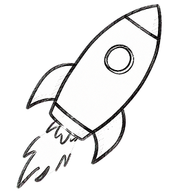
Анализируем, улучшаем, растим результат.
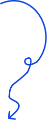
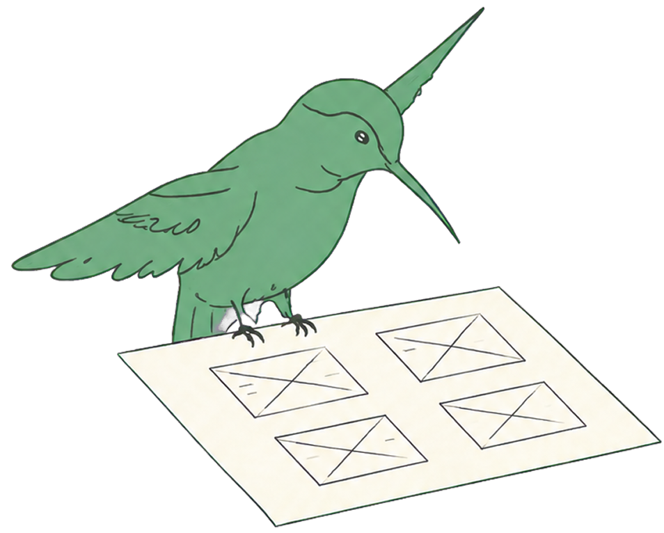
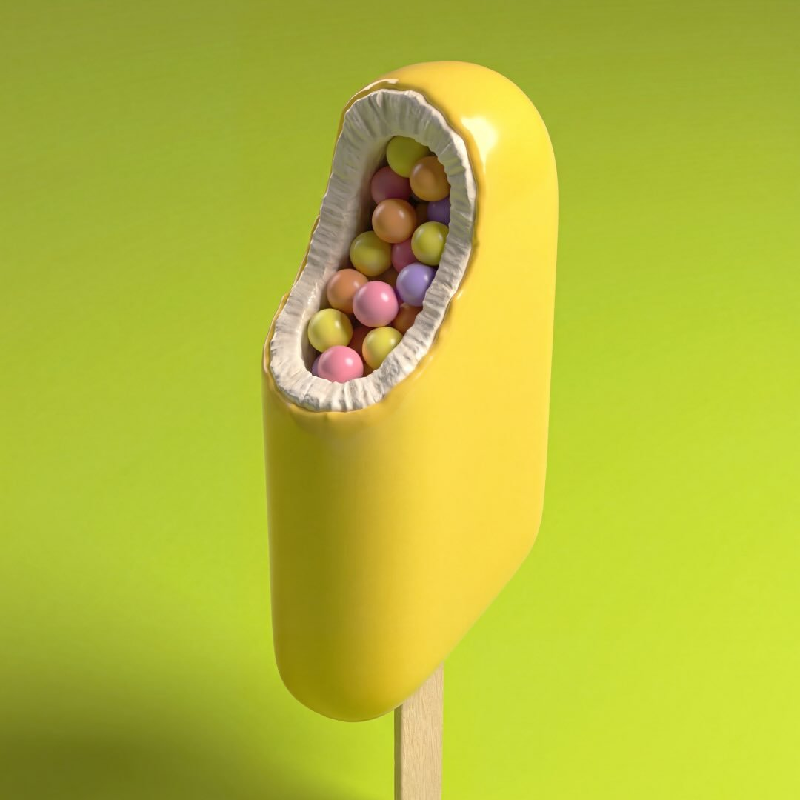
«Нас услышали и сделали действительно
то, что мы хотели увидеть»